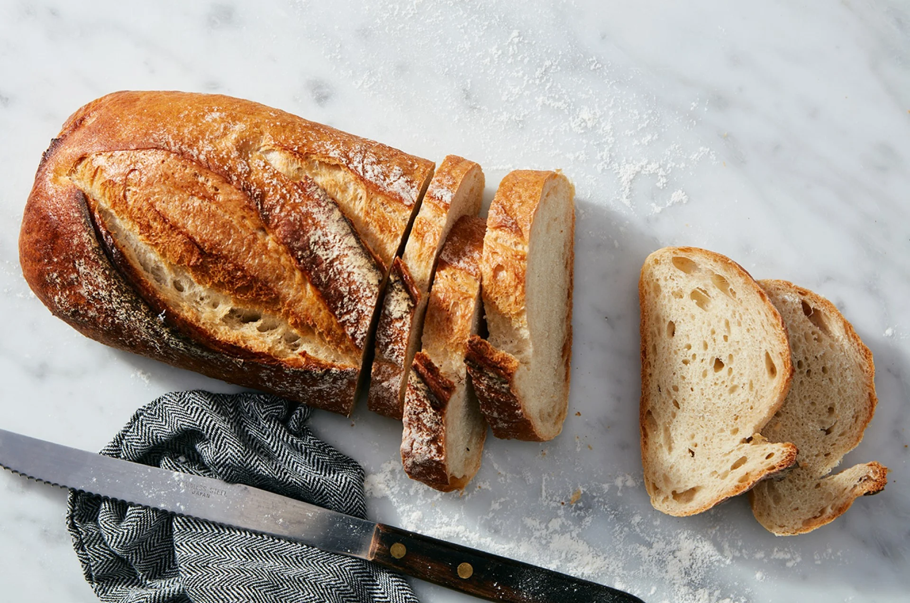

Rustic Sourdough Bread

This chewy loaf has rich, deep, flavor with mild sourdough tang. Since it includes commercial yeast as well as starter, you’re guaranteed a good, strong rise — even if your starter isn’t quite up to snuff.
1 cup(227g) ripe (fed) sourdough starter1½ cups(330g) water, lukewarm (90 degrees F)1½ tspinstant yeast2 tspsalt5 cups(600g) bread flour
Weigh your flour; or measure it by gently spooning it into a cup, then sweeping off any excess. Combine all of the ingredients, kneading to form a smooth dough.
Allow the dough to rise, in a lightly greased, covered bowl, until it’s doubled in size, about 2 hours.
Gently divide the dough in half (or keep as one); it’ll deflate somewhat. Preshape each piece of dough by pulling the edges into the center (add water or oil to hands first), turning it over so the seam is on the bottom, and rolling under your cupped hands to form a ball. Let the dough rest, covered, for 15 minutes.
To make fat oval loaves, elongate each ball of dough you’ve preshaped by gently rolling it back and forth on an unfloured work surface several times. For longer loaves, continue rolling until they’re about 10” to 11” long.
Place the loaves on a lightly greased or parchment-lined baking sheet. Cover and let rise until very puffy, about 2 hour. Towards the end of the rising time, preheat the oven to 450°F.
Spray the loaves with lukewarm water and dust generously with flour.
Make two fairly deep diagonal slashes in each; a serrated bread knife wielded firmly or a lame, works well here.
Bake the bread for 35-40 minutes (45-50 minutes if doing a large one), until it’s a very deep golden brown. Remove it from the oven, and cool on a rack until cool.